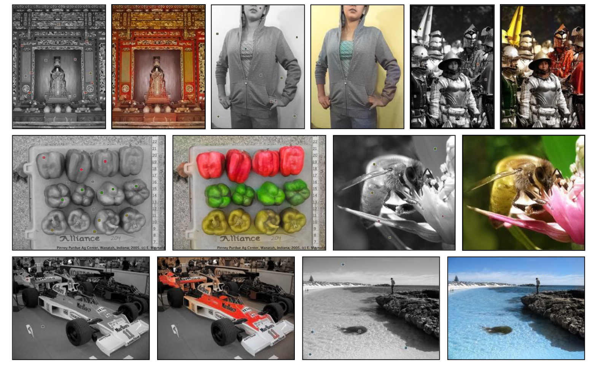

arxiv, github(official), project
どんなもの？
ピクセルレベルの色ヒントであるlocal hintsと、画像全体の色ヒントであるglobal hintとを組み込んだインタラクティブな着色手法を提案。インタラクティブな着色を可能にしました。

先行研究と比べてどこがすごい？
local hintsを組み込むことで、インタラクティブな着色を可能にしました。より自然で鮮やかな着色が可能になりました。
技術や手法のキモはどこにある？
着色とは？
まずは着色タスクにおける入出力を確認しておきましょう。
入力は $\mathbf{X} \in \mathbb{R}^{H \times W \times 1}$ のグレースケール画像です。ここで、画像の高さが $H$, 幅が $W$ を表します。グレースケール画像とは、Lab 色空間の L 成分であり、明度を意味します。Lab色空間については Lab色空間 -wikipedia- を参照してください。
出力は $\mathbf{\hat{Y}} \in \mathbb{R}^{H \times W \times 2}$ の画像です。Lab色空間の a* 座標 と b* 座標とを予測します。なぜ出力が2次元かというと、入力が L* 座標であるため、最終的に a* と b* を加算すれば Lab 画像（カラー画像）が表現できるためです。
Network Architecture

ネットワークは3つの構成から成ります。
- Main Colorization Network｜L* のグレースケール画像から a* b* 画像を予測するネットワーク
- Local Hints Network｜ユーザのローカルな色ヒントを加えるネットワーク
- Global Hints Network｜画像全体の色ヒントを加えるネットワーク
Main Colorization Network
L* 画像 $\mathbf{X}$ から a* b* 画像 $\mathbf{\hat{Y}}$ を出力するネットワークです。skip connection を有する U-Net（Ronneberger et al. 2015）型の CNN を採用しています。
構造の詳細は official github を参照してください。
Local Hints Network
本ネットワークは主に２つの役割があります。
- ユーザが指定したローカルな色ヒント local hints を、グレースケール画像に組み込みます
- ユーザにおすすめカラーパレットを提示できるように学習します
1つ目は concat するだけなので省略し、2つ目の役割について以下で説明します。
Data-drive color palette
もっともらしい色を選ぶことは、現実的な色付けに向けた重要なステップです。適切なツールがないと、ユーザーが直感的に色を選択するのが難しい場合があります。
すべてのピクセルについて、出力色 $\mathbf{Z} \in \mathcal{R}^{H \times W \times Q}$ の確率色分布（color distribution）を予測します。ここで、Qは量子化された色のビンの数であり、$Q=313$ を指定しています。
color distribution $\mathbf{\hat{Z}}$ を予測するために、$\psi_l$ によってパラメーター化されたネットワーク $\mathcal{G}_l$ を用いて、入力グレースケール画像 $\mathbf{X}$ と local hints によるマッピングを学習します。ground truth 分布 $\mathbf{Z}$ は、ground truth colors $\mathbf{Y}$ からエンコードされます。全ピクセルに対し、cross-entropy loss を計算します。
$$ \mathcal{L_{cl}(\mathcal{G}_l(\mathbf{X}, \mathbf{U}_l; \psi_l), \mathbf{Z})} = \sum_{h,w} \sum_q \mathbf{Z}_{h, w, q} \log (\mathcal{G}_l (\mathbf{X}, \mathbf{U}_l; \psi_l)_{h, w, q}) $$
$$ \psi_l^* = \arg \min_{\psi_l} \mathbb{E}_{\mathbf{X}, \mathbf{Y} \sim D} [\mathcal{L_{cl}(\mathcal{G}_l(\mathbf{X}, \mathbf{U}_l; \psi_l), \mathbf{Y})}] $$
Global Hints Network
Global Hintsによる着色の例。各画像右上の画像が Global Hints として与えられている。
Global Hints には空間情報がないため、Main Colorization Network の中央付近に情報を concat します。
どうやって有効だと検証した？
定量評価
評価指標は PSNR です。PSNRについては 画質指標PSNRを求める を参照してください。
定性評価
インタラクティブな機構を導入することで、従来手法より鮮やかに、自然な着色が行えています。


議論はあるか？
ユーザが普通はありえない色に塗ったら？
ヒトの顔を緑で塗ったとしても、その通りの着色結果が得られます。
 (a) 意図しない local hints の入力。(b) 図(a)による着色結果。(c) 適切な肌色による着色結果。
(a) 意図しない local hints の入力。(b) 図(a)による着色結果。(c) 適切な肌色による着色結果。
古い白黒写真にも適用してみた
古い白黒写真にもある程度有効に働くようです。しかし古い写真には折れ、破れなどがあるため、あくまで着色のみ行えるようです。
 入力の local hints がかなりたくさん必要。使いこなすの大変そう。
入力の local hints がかなりたくさん必要。使いこなすの大変そう。
次に読むべき論文はあるか？
- Jehng-Wei Su et al., “Instance-aware Image Colorization,” CVPR 2020
- 本研究をベースにしている
- Object Detection + Colorization で高精度な着色を実現